Query Patterns and Discovery
Often times, questions posed in a study relate more broadly to combinations of words than to individual words. For instance, you may be interested in learning how the activists referred to people and plans. By constructing patterns that involve several words, you are searching for constructions such as were also late, share the bill, or water storage for the River Valley and the Central Plain. None of the three constructions contains a word alone that would mean what you seek.
Pattern searches are most helpful when it is the construction rather than individual words involved in the construction that concerns you. Searching for the word bill, for instance, produces every occurrence of bill within the project regardless of its context. Searching for verbs taking bill as their objects returns the subset of bills in the project that get shared, cut, read, supported, or included; furthermore, it tells you precisely the verbs the writers use. Words used in constructing a pattern need not be fixed; each word can be left as open as any adjective or any form of a verb, creating flexible patterns that capture many variants a researcher may overlook when searching for them one by one. Besides searching for constructions involving particular concepts, pattern searches capture stylistic phenomena such as long noun phrases, typical indicators of a dense, formal style.
Query from Selection converts selected words in the reader into a pattern, which you then broaden one word at a time. Passages Like a Code searches the documents for sentences that resemble the passages coded with a particular code but do not carry it themselves. These and Recipes, which are ready-made queries for common questions, are covered later in this chapter.
For comprehensive coverage of the fundamentals that apply equally to all queries, consult Chapter 15, Building a Query. Reading and exporting query results are explained in Chapter 16, Query Results and Statistics. The following examples come from “Climate Debate”, the bundled example project of this guide. Importing the project with File ▸ Import ▸ Example Project lets every pattern work right away, since its documents are already indexed.
Pattern queries
A pattern query identifies pattern matches, meaning stretches of text within a single sentence which conform to the specification you define. There are three varieties of pattern, namely Sequence, Dependency, and Phrase.
- Sequence specifies the words according to their position and ordering. An example might look something like a form of be, followed by up to two adverbs, then an adjective.
- Dependency specifies the words according to their connection grammatically, regardless of position. Examples may be something like verbs connected to their objects, or nouns related to descriptive adjectives.
- Phrase specifies complete phrases based off of the sentence’s phrase structure. An example here could be any noun phrase of six words or more.
The choice between sequence patterns and the rest depends on whether or not your construction uses positional relationships between words. A sequence pattern works best for short constructions whose words occur in a fixed order, adjacent to each other. Dependency patterns suit words which need not occur next to each other, or whose grammatical relationship is itself the question. Phrase patterns are useful for asking questions regarding types and sizes of phrases rather than individual words.
Pattern queries make use of the grammar analysis already performed in each document. Thus they operate exclusively on documents that have been indexed. In cases where not all the documents within scope are indexed, a count such as 12 of 14 beside the number of hits indicates how many documents were actually processed by the query. For further details regarding indexing, please refer to Chapter 21, Analysis and Indexing.
In lists resulting from a pattern query, the Match column contains the matching words, surrounded by Left Context and Right Context. Rules defined in the Where condition will be applied to the matching words as a whole. Such rules evaluate properties such as the Text or Length of the match, its sentence, paragraph, or document, and contexts such as Inside a coding.
Show offers the full range of results except for Keywords. Pattern queries with a Show setting of List can be saved as lenses, providing annotations for matches in the reader as you read and code, or converted to analyzers. Please refer to Chapter 18, Using Query Results for additional information.
Starting a pattern query
Patterns may be built wherever queries may be made. With document queries, the query operates solely on that document, thus making it a suitable place to experiment with building your pattern. Queries sections within set or project tabs contain conditions next to the saved queries and recipes; here results fill the area underneath the conditions and follow your pattern as you change it. With larger sets or projects, results wait until you execute your query. Clicking the Run Query button (triangle icon), located in the bar at the top, or pressing ⌘R will trigger execution.
To start a pattern query:
- Open a query. For one document, click Multimode in the inspector, then Query. For a set, click Queries in the row of buttons at the top of its tab, or choose Window ▸ Queries and pick the scope there.
- In the Find condition, choose Text · Pattern Matches from the menu. A Pattern condition appears below Find, holding a sequence of two empty words, A and B.
- In the Pattern condition, choose Sequence, Dependency, or Phrase.
Sequence patterns
A sequence pattern is a list of steps, read from left to right. Steps consume some number of consecutive words (including zero); a word step has rules about its words and is associated with a letter (A, B, C, and so on). The other type of step, without rules, is called a gap, denoted by an ellipsis (…); gaps represent any word or sequence of words that occurs between other words of interest.
Steps appear as outlined boxes on the Pattern condition, where each box represents a step. The top row of the box displays the letter or ellipsis, followed by two steppers (connected by to), and a remove button (disabled while only one step remains). If the step is a word step, the rules follow below its top row. The Add menu for adding rules to a step is identical to the Add menu in the Where condition. Below all existing steps appear the Add Word and Add Gap buttons.
Building a sequence
The activists in “Climate Debate” tend to refer to people and plans using some form of the verb be followed by an adjective, as in None of this is radical. Occasionally, there may be an adverb between the two, as in commuters who were also late for work. The figure below demonstrates this sequence in the “Activists” set. In Step A, the rule is Lemma is be, which means that Step A matches on any form of be. In Step B, the rule is Word Class is any of ADV · Adverb, and the step is set to 0 to 2, which means that there are 0, 1, or 2 occurrences of this class. In Step C, the rule is Word Class is any of ADJ · Adjective.
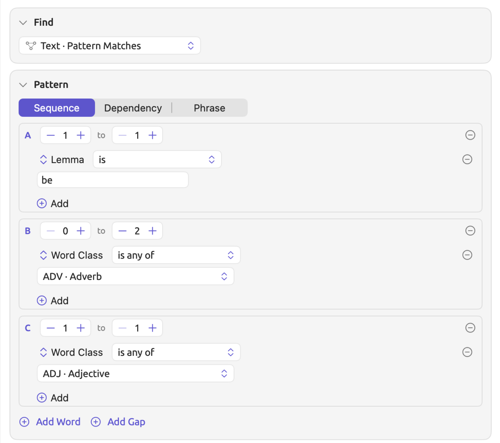
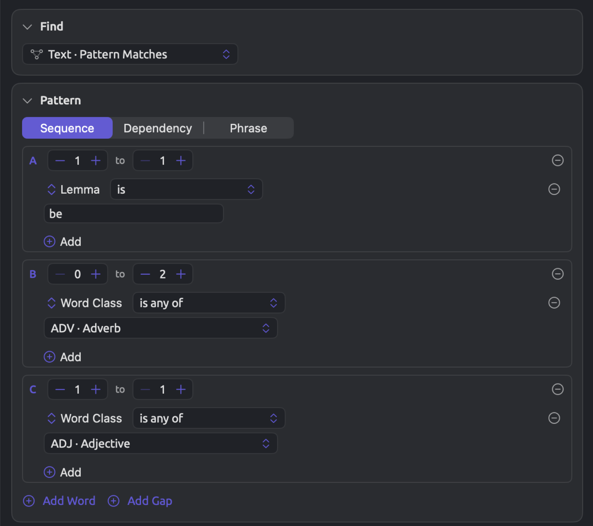
The results include were also late from “Why We Block the Roads” and is radical from “Running Out of Time”. For “Running Out of Time”, step B had no words, which its 0 to 2 allows.
To build a sequence:
- In the Find condition, choose Text · Pattern Matches, and leave the Pattern condition at Sequence.
- Under each word step, choose Add ▸ Add Rule, choose a field such as Lemma or Word Class in the field menu, and give it a value.
- Set each step’s steppers to the number of words it may take (see Repeats and gaps below).
- Click Add Word for each further word, or Add Gap where other words may come between.
When multiple rules are present in a step, the choices All, Any, and None are available at the top of those rules, as seen in the Where condition. A rule lacking a value, e.g., a Lemma rule lacking anything entered, is shown outlined and ignored until it has been completed. Thus, if a step’s sole rule is incomplete, the step matches every word and punctuation mark.
When analyzing your own texts, consider beginning with an observed grammatical construction and specifying each word only as tightly as your question needs. A lemma ensures your step consists of one word in any form, whereas a word class allows any word of the specified category to match. Query from Selection, explained later in this chapter, creates this sort of sequence based on an example selected in the reader.
Repeats and gaps
The two values of a step denote the minimum and maximum number of consecutive words needed for matching. New word steps come preset with 1 to 1; changing a word step to 0 to 1 will make its word optional.
All words a step takes need to satisfy the rules of that step. A step configured as 1 to 3 with Word Class is any of NOUN matches heat pump program as one stretch consisting of three consecutive nouns. No step can accept more than 32 consecutive words; moreover, the second value of any step must always be greater than or equal to its first value and cannot be less than 1.
Add Gap will introduce a new step having 0 to 3 as its configuration and containing no rules whatsoever; thus, it takes up to three arbitrary consecutive words before moving on. Steps are always introduced at the end; inserting a gap between A and B involves deleting step B, clicking Add Gap, then Add Word, thereby creating a new step B.
If the A step is set to Lemma is publish, followed by a gap, and finally the B step to Lemma is plan, the resulting pattern should find publishes Larkhaven’s climate plan in “A Mayor’s Promise” and publishing a single costed plan in “Net Zero Will Cost You”. Note that in the former sentence the gap consisted of three consecutive words, namely Larkhaven, ’s (which the grammar analysis counts as a word of its own), and climate. Finding the phrase publish the city’s climate plan also requires setting the gap size limit to 4 instead.
As a general recommendation, place gaps between word steps whenever possible instead of putting them right after the start or before the end of a pattern. Matching is done in a greedy fashion (see How a sequence is matched below). Therefore, placing a gap at the end of a pattern will append an extra stretch of up to three words after each match, and placing one at the beginning does the same before it.
How a sequence is matched
LemmaLoom analyzes each sentence on its own, word by word, from its first word.
- Commas, periods, and other punctuation marks count as words as well.
- A step without rules, gaps included, will consume any word or punctuation mark. In order to skip over words but not punctuation, use Add Word instead of Add Gap. Make sure your step has the rule Is Word is true. Set it to 0 to 3.
- As LemmaLoom scans positions along a sentence, it tries to find the longest stretch of words/punctuation marks that match the whole pattern. Should it succeed, then LemmaLoom has found a match and moves on to analyzing the remainder of the sentence beginning after the last matched word/punctuation mark.
- For each step within the matched stretch, it consumes as many words/punctuation marks as possible while the steps after it still fit.
Here’s an example taken from the document “Why We Block the Roads”, The people who won the rights we now take for granted were called extremists and troublemakers, often by commuters who were also late for work. At the first were in this sentence, Step A matches with a form of be. While Step B matches zero-length sequences, Step C requires an adjective, and called is a verb, meaning that no matches are made starting at this were. However, at the subsequent were, Step A matches. Step B matches with the adverb also, while Step C matches with the adjective late. Therefore the matching stretch becomes were also late. Similarly, are mostly too young in the document “Running Out of Time” is a match in which Step B contains two adverbs.
Letters
A word step retains its letter during its existence. Whenever a word step is added, it gets the first letter not in use. If B is deleted and a word step is added, it becomes B once again.
In addition to recording pattern matches, LemmaLoom keeps a record of the actual words covered by each letter involved. In the sentence mentioned before, A covered the word were, B covered also, and C covered late. However, when is radical is considered, B does not cover any words.
The letters used in the pattern will be visible on the Query Text condition, writing down the example as Find Pattern Matches A:[Lemma is "be"] B:[Word Class is any of ADV]{0,2} C:[Word Class is any of ADJ]. Note the curly braces that give information on the number range for a step if different from 1 to 1.
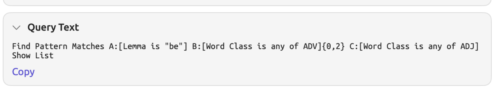
Your count may also be grouped by the words of a particular letter. Consider the Relation recipe as an illustration; this recipe gives you the ability to count according to Word · B · Lemma, or the lemma of the word covered by letter B (see Recipes later in this chapter). If B covers multiple words in one occurrence (such as if a pattern step had range 1 to 3), only the first word would be taken into account. Since field menus contain only fields of the entire match, you need to use the Relation recipe template to customize the count of your pattern using a single letter; for a sequence, choose Sequence from the Pattern condition, without changing the count criteria (still Word · B · Lemma).
Dependency patterns
During the indexing of sentences by LemmaLoom, all words are linked to the word they depend on, known as the head word. Adjective words depend on their nouns, while subjects or objects depend on their verbs. Within each sentence, one word (typically the main verb) depends on no other word. This word acts as the root word. When all dependencies between words are accounted for, a tree structure emerges, with the root word being the apex. The Structure facet within the Grammar inspector displays this tree graphically (see Chapter 11, The Grammar Inspector).
A dependency pattern defines a subset of the tree structure, consisting of up to six words, each having its own rules, and the dependency relationships between them. Words connected via a dependency link need not occur consecutively within the sentence. For instance, a dependency pattern for a verb with bill as its object yields share the bill, cut energy bills, and read their energy bills. On the other hand, a sequence pattern that allows gaps yields these too, but also added to the bills, where bills is not the object of added.
Each word appears as an outlined box inside the Pattern condition, labeled with a letter. Each of the words except for one comes with the following three controls:
- Head menu containing the letter of the word it depends on;
- Relation menu whose initial content is Any Relation;
- and the Any Depth checkbox.
The word without these controls is referred to as the anchor word. Anchor words are initially assigned letter A in new patterns. The anchor is the starting point of your dependency search and always remains in the pattern. Moreover, all words included within a dependency pattern must connect back to the anchor either directly or indirectly via intermediary words.
Building a dependency pattern
The figure below displays the pattern for the verbs the activists use with bill as their object. Word A, which acts as the anchor, has the rule Word Class is any of VERB · Verb. Word B is dependent on word A by the Object relationship, and has the rule Lemma is bill. The Hit menu at the foot of the condition is left at Matched Words.
Among the matches, you find share the bill from “Farmers Are Not the Enemy” and read their energy bills from “Hope Takes Work”. The same shape works for any verbs and objects within your documents. Fix the noun in B, as done in this example, to investigate what happens with the noun, or fix the verb in A to investigate the object(s) associated with it.
To build a dependency pattern:
- In the Find condition, choose Text · Pattern Matches, and choose Dependency in the Pattern condition. The condition starts with two words, the anchor A and the word B, which depends on A.
- Under each word, add the rules it must pass, as in a sequence.
- For each word other than the anchor, choose its head in the head menu and a relation in the relation menu (see Relations below).
- Click Add Word for each further word, up to six in all.
- In the Hit menu at the foot of the condition, choose how much of the sentence a match covers (see The anchor and the extent of a match below).
Add Word adds a new word whose head word is the last word on the list, linked via an Any Relation relationship. You may specify another head word in its head menu. Add Word disappears when the pattern contains six words.
Relations
The relation menu is where you describe how a word relates to its head. The Any Relation option at the top of the menu accepts any link between words.
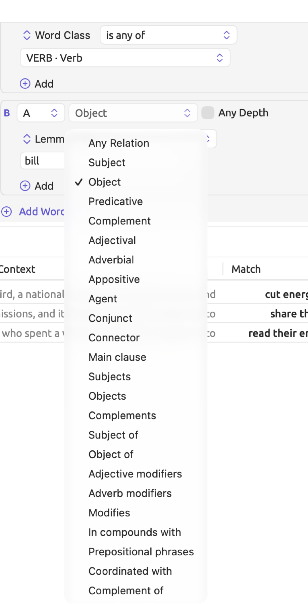
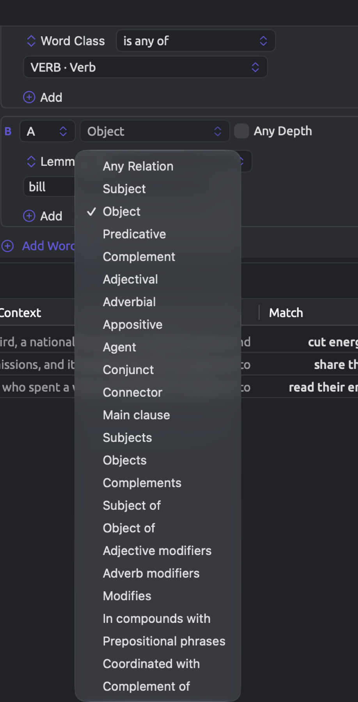
After that come the grammatical functions, namely Subject, Object, Predicative, Complement, Adjectival, Adverbial, Appositive, Agent, Conjunct, Connector, and Main clause. Except for Main clause, these are the same functions that the Grammatical function lens uses to color code your documents (see Chapter 6, Lenses). Each function names the job that a particular word does for its head. Given B depends on A by Object, then B is an object of A. Object includes in English not only the objects of verbs but the object of a preposition too; therefore, in on a podium, podium is an object of on.
Finally comes the set of word sketch relations (see Chapter 12, Word Sketch). In a pattern, these relations (Subjects, Objects, Complements, Adjective modifiers, Adverb modifiers, In compounds with, and Coordinated with) are the same as those in word sketches. They are read starting with the head word like the grammatical functions above, yet organize the links according to a word sketch’s convention. Objects in a pattern includes only the direct and indirect objects and excludes the object of a preposition; Complements covers complements and predicatives, so it includes busy in He was busy as well as protect in we want to protect the climate. Coordinated with is equivalent to Conjunct.
Subject of, Object of, Modifies, and Complement of express links in reverse, from the lower word up. Prepositional phrases links two words through a preposition.
Links in the three languages differ in name from each other; thus, LemmaLoom translates them to the relations described above, allowing you to use one pattern on documents in English, German, or Chinese. Differences exist in analyses between languages nonetheless. For instance, consider the object of a preposition. In German, Podium in auf einem Podium is included in the prepositional phrase and treated by LemmaLoom as Adjectival, while in Chinese the preposition hangs below its noun as a Connector. Ensure you review a few matches in each language before comparing counts across languages.
Any Depth
Without Any Depth, a word needs to depend directly on its head. When you tick Any Depth, it allows the word to depend on its head indirectly via other words, as a child, as a grandchild, and beyond. If you tick Any Depth, the relation menu becomes irrelevant. Tick Any Depth if you care that two words belong together, regardless of how exactly they are connected grammatically.
In “Running Out of Time”, the passage states, If you are walking toward a cliff edge in thick fog, the fact that you cannot see the drop is a reason to stop walking, not to walk faster. Here, edge is dependent on toward and not directly on walking. A query searching for a pattern where A has Lemma is walk and B has Lemma is edge picks up this passage only when Any Depth is ticked for B.
The anchor and the extent of a match
All words that pass the anchor’s rules are considered anchors. LemmaLoom then tries to find words that fit each position in the rest of the pattern. The pattern requires that every position be filled by a different word in the sentence. As such, each anchor word can only provide one matching instance, even when more than one word would fit. Counting matches, therefore, is counting instances of anchors.
The Hit menu at the foot of the condition controls the extent of each matched instance:
- Matched Words includes everything from the first word of the match to the last, including anything in between. For example, in the pattern A → B where A is walk and B is edge, the match would be walking toward a cliff edge.
- Whole Subtree matches include everything in the subtree rooted at the anchor. This means the matching instance will include the matching anchor and everything that depends on it. In “Running Out of Time”, this means If you are walking toward a cliff edge in thick fog, the clause headed by walking.
Use Whole Subtree when you need context, such as before coding an instance of your query.
Phrase patterns
In addition to analyzing connections between words, the grammar analysis breaks down each sentence into phrases nested within other phrases. In the document “Heat Wave Report 2024”, the phrase water storage for the River Valley and the Central Plain is a noun phrase. Within it are the smaller noun phrase water storage, as well as the prepositional phrase for the River Valley and the Central Plain, containing the noun phrase the River Valley and the Central Plain. A phrase pattern locates phrases based on their form and span length. Use it to ask style-related questions about phrasing rather than questions about the meanings or contents of individual phrases; if you wanted to know how much detail a writer fits into a noun phrase, for instance, you could use a phrase pattern to investigate that.
The Pattern condition for a phrase pattern includes:
- The Form button displays a list of general forms to tick off, namely Noun phrase, Prep. phrase, Adj. phrase, Adv. phrase, Verb phrase, and Clause. These have the same meaning regardless of the languages included in your analysis.
- The Phrase Label button shows the detailed labels assigned to phrases according to the language(s) being searched. The available labels are NP · Noun phrase and SBAR · Subordinate clause, among others, depending on your documents. If the documents are in multiple languages, then the name of the language follows the label.
- The At least … words stepper specifies the minimum number of words required for a phrase from 1 up to 50. Punctuation marks in a phrase count toward the span length.
- Outermost Only filters out phrases that occur within any other phrases located by the current pattern. As an example, the longer noun phrase water storage for the River Valley and the Central Plain includes the shorter noun phrase the River Valley and the Central Plain, so ticking Outermost Only leaves only the former in the results list.
- Include Noun Chunks identifies noun chunks, short noun phrases ending with their heads such as heat warnings or the national heat helpline. A noun chunk matches NP · Noun phrase.
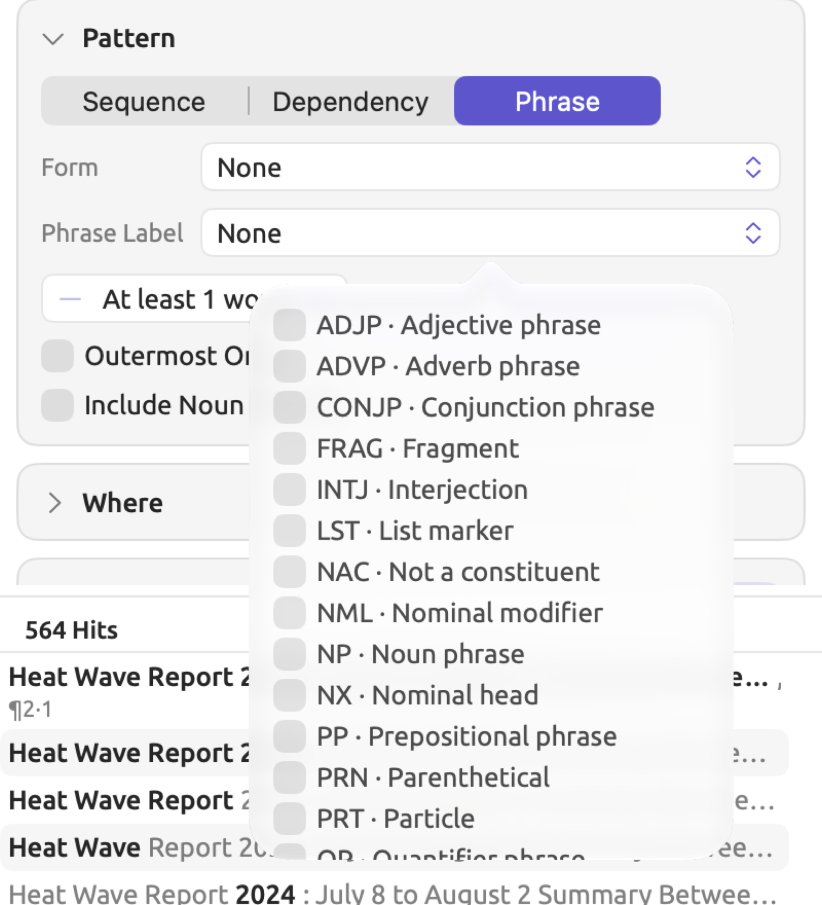
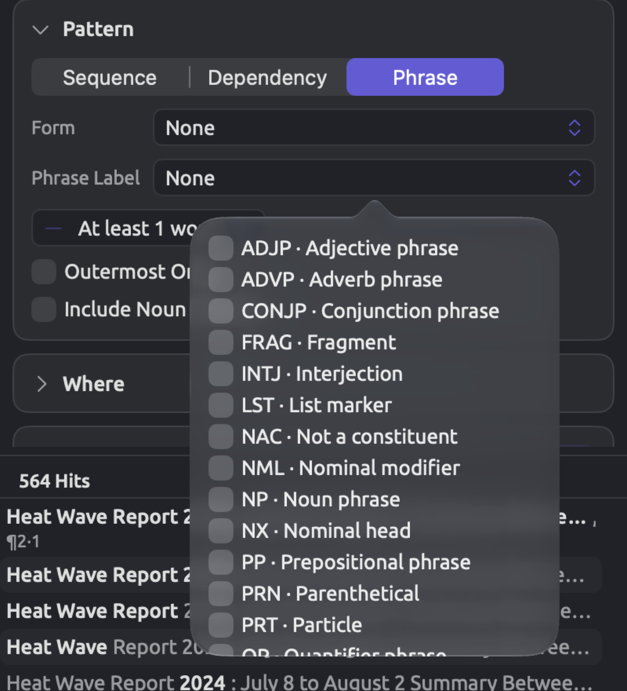
Entries currently ticked appear on each button. Ticking nothing shows None and means all phrases qualify. Ticking several entries in one list accepts any of them. When both lists have ticked items, a phrase meets the criteria only if it matches options from both. A phrase found twice over the same words, such as a noun chunk that matches a noun phrase exactly, is listed once.
The figure below represents the phrase pattern built for “Heat Wave Report 2024” in the inspector. It uses the form Noun phrase, with At least … words set to 6 and Outermost Only ticked. The list holds each long noun phrase of the report once, at its widest.
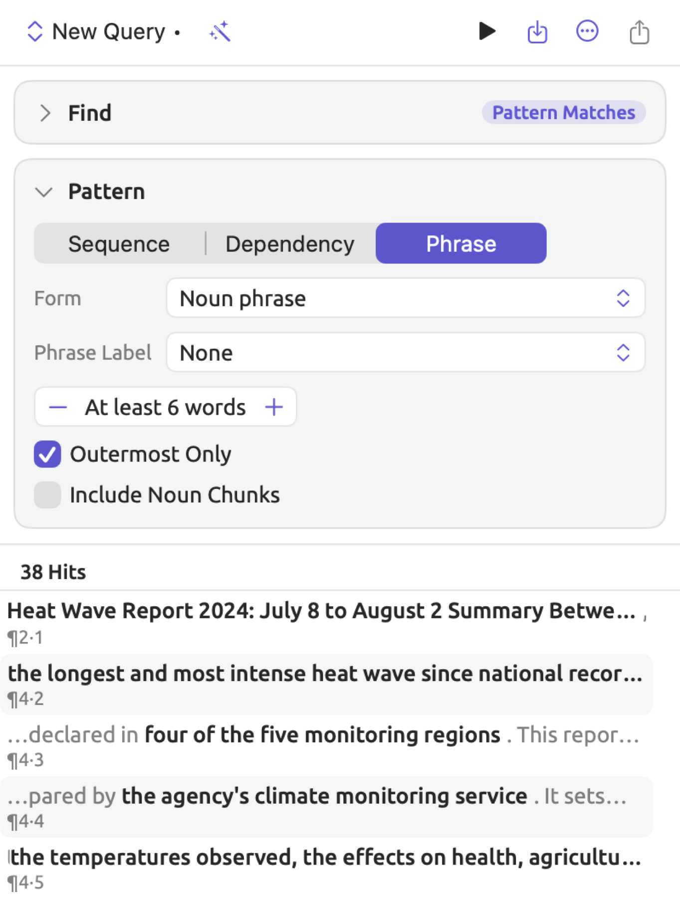
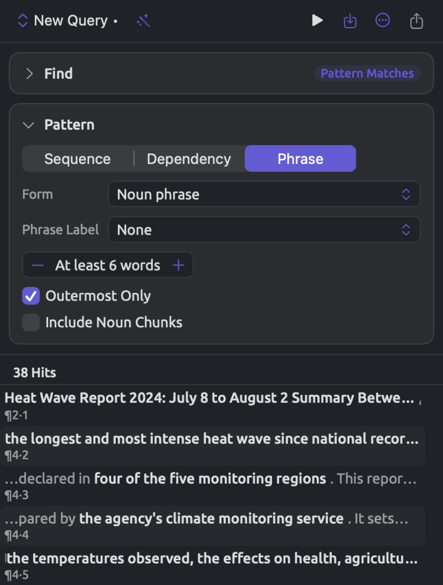
To find phrases by kind and length:
- In the Find condition, choose Text · Pattern Matches, and choose Phrase in the Pattern condition.
- Click the Form button and tick one or more forms in the list that opens, or do the same with detailed labels under Phrase Label. Click outside the list to close it.
- Set the shortest length with the At least … words stepper.
- Tick Outermost Only to list only the widest of nested phrases, and Include Noun Chunks to count short noun phrases as well.
The Grammar · Phrases unit in Find allows you to locate the individual occurrences of the very same phrases and provide rules according to Phrase Label, Form, Width, Phrase Function, and Phrase Head (see Choosing what to find in Chapter 15, Building a Query). Choose this category of search when you are interested in your phrase’s role within a sentence or its head word; only the phrase pattern has Outermost Only and can add noun chunks.
Query from Selection
Edit ▸ Query from Selection builds a sequence pattern based on words selected in the reader. This feature takes you from a sentence you found interesting while reading to other sentences that are similarly constructed. It displays a ladder above the conditions where there is a column per word going downwards from the exact word form at the top to any word at the bottom. Clicking a lower rung expands the description of that particular word, and your query gets updated every time with fresh results accordingly.
Making a query from a selection
- In the reader, select up to twelve words within one sentence. Punctuation marks count toward the twelve.
- Choose Edit ▸ Query from Selection. The item is disabled when nothing is selected and while you are editing the document’s text.
The inspector opens at Multimode ▸ Query. Your previous query will be replaced by a new unsaved query called New Query, while the results of the latter show immediately. Be sure to save your work prior to choosing the command if you were working on modifying your previous query.
Your ladder will have as many columns as words selected, each titled by its letter. From top to bottom, each column offers:
- Word “activists” for this particular word form;
- Lemma “activist” for all variations of this word;
- Tag NNS for all occurrences of any words with identical detailed part-of-speech tags, if available in grammar analyses (NNS denotes a plural noun);
- Word Class NOUN for all instances of words sharing this word class;
- the word’s grammatical function, such as Subject (if it’s known);
- Any Word for all words in general (offered only for words, not punctuation marks).
Capital letters and accents aren’t taken into account on the first two rungs. Rungs currently selected will be highlighted in color. Columns will begin with lemmas on nouns, proper nouns, verbs, adjectives, adverbs, and numbers, and with word forms elsewhere.
Widening the search
“Running Out of Time” states If a factory town loses its old jobs, then the new ones must be built there, not in a business park three hundred kilometers away. Below is the ladder for the new ones, selected in that sentence. This ladder contains three columns, where column A begins on Word “the”, column B on Lemma “new”, and column C on Lemma “one”. Initially, the query returns the single instance of the new ones in the op-ed piece. Once you click Word Class ADJ in column B, as illustrated below, any adjective could precede one, and hence the next one becomes another instance included in the list. Likewise, clicking Any Word in column A as well allows any word to come first, and thus a better one gets added to the list. However, doing so also produces far harder one, where the adverb far comes first.
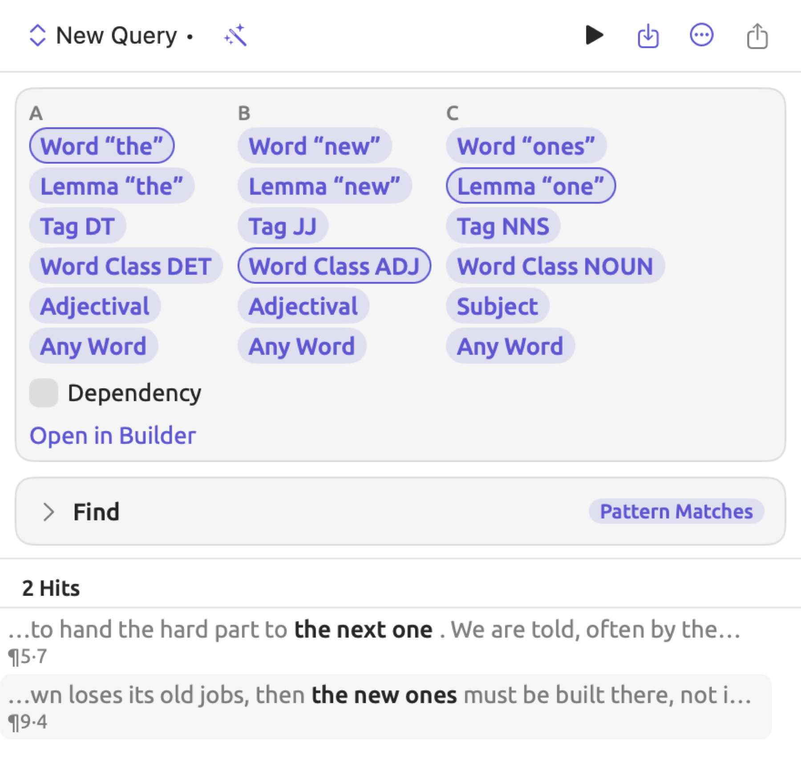
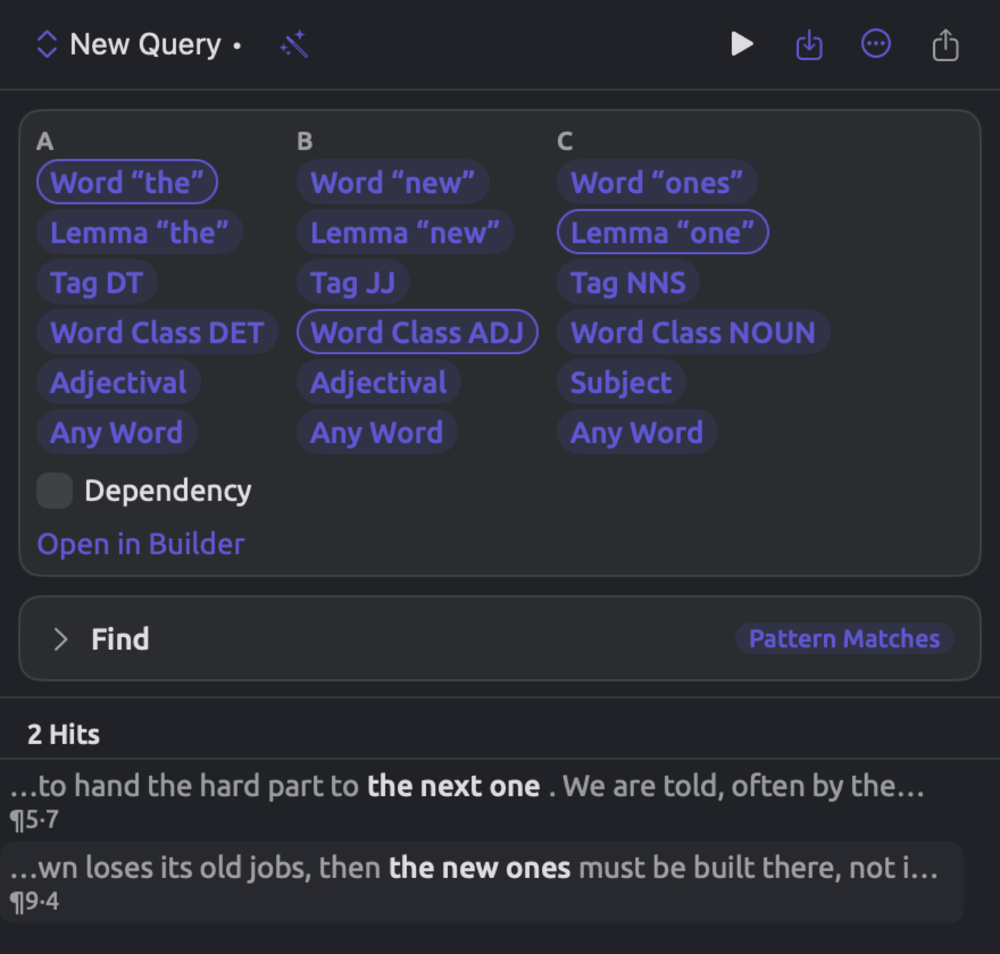
Usually, you should widen a single column at a time and check what each change brings in. Once the widening introduces unwanted matches, as far harder one does here, you should step back up a rung or open the pattern in the builder and add a rule.
Once opened, the ladder remains visible as you alter the Show condition. To display the frequency distribution of the variants, choose Count in the Show condition and click Group By. The new row groups by Text, the words of each match. Each subsequent click on a rung will update the counts.
The Open in Builder button opens the Pattern condition while simultaneously closing the ladder. You can modify the pattern in the Pattern condition in exactly the same way as one you built yourself. Modifying any condition except Show causes the ladder to close as well.
Your query operates solely upon the currently opened document. To apply a query upon an entire set or project, save your query with Project selected from the Available In menu of the Save Query dialog; by default this is Document, which keeps it in this document only. Your query will then appear in the left column of the set’s or project’s Queries section. For additional information regarding saving queries, refer to Saving queries in Chapter 15, Building a Query.
Adding context
Below the ladder are up to four checkboxes that can add rules based on your selection in the text. Each one shows only if applicable.
- Codings appears if your selection overlaps codings. Ticking Codings adds a context to the Where condition that keeps only matches overlapping a coding with one of those codes (Some Overlapping Codings whose Code is any of them).
- Speaker Turn appears if you begin the selection within a speaker turn in your transcript. By ticking Speaker Turn, you constrain matches so that only the matches Inside this speaker’s turns remain valid. For instance, if the selection comes from one of the skeptic’s answers in “Radio Debate”, then the matches are limited to the turns of the speaker Skeptic.
- Findings appears when an analyzer’s findings overlap the selection, for example a hedge found by the Metadiscourse analyzer. By ticking Findings, your matches are constrained to those that fall In the Same Sentence As a finding of one of the kinds generated there.
- Dependency appears if your selection has six or fewer words, punctuation included, that depend on each other grammatically, i.e., where each word except one depends on another word in the selection.
When you tick Dependency, you convert your sequence into a dependency pattern which comprises dependency relations between your selected words, where each relation has the value Any Relation. Your anchor is whatever word’s head lies outside the scope of your selected range, meaning that the anchor is not necessarily going to be A (here ones, column C, is the new anchor), and the Hit menu on the bottom of your Pattern condition is automatically set to Matched Words. While your rungs limit what the words could be, your words themselves can now stand apart from each other. For instance, taking your initial set of rungs, the dependency pattern would also match the genuinely new ones, where another word stands between the and new.
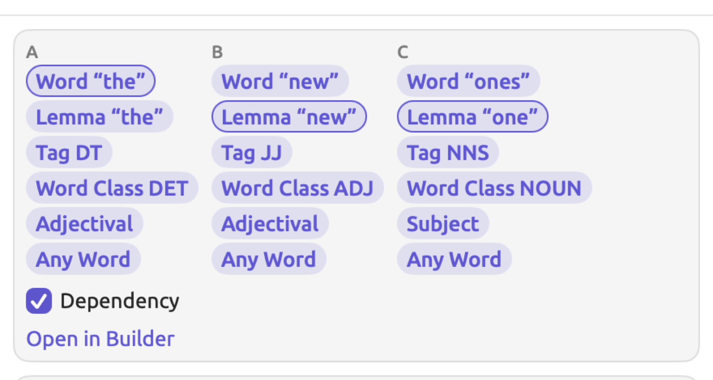
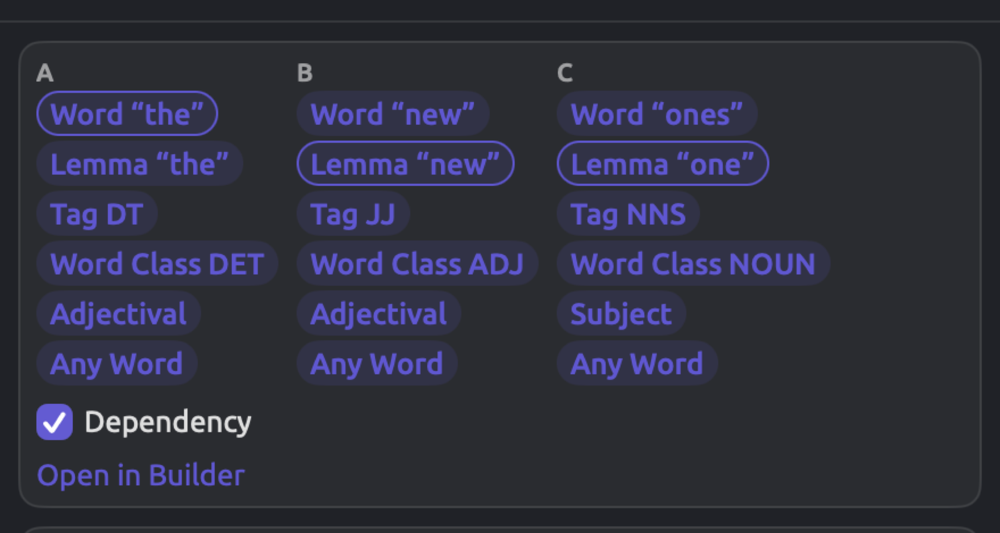
When there is no ladder
Query from Selection does plain text searching if the selected text contains several sentences, surpasses 12 words, or comes from a non-indexed document. In the query setup, Find is configured to be Text · Text Matches, while the text to search for is the selected text itself. Matches are whole words as long as the endpoints of the selection fall on word boundaries.
Passages Like a Code
Passages Like a Code returns a list of sentences that contain the usual words found within passages coded with the selected code, while lacking the code themselves. Passages Like a Code analyzes the words within the passages of text that have already received a particular code, comparing those words to the words found within the remainder of your documents. Words typical of these passages become part of the profile associated with the code. Sentences lacking the selected code receive scores based upon the occurrence of these words and their weight in the code’s profile. In addition, Passages Like a Code will analyze sentences that have received other codes.
Passages Like a Code returns a list of sentences that you must manually evaluate before deciding whether to code them. Passages Like a Code will not understand irony, recognize a passage that makes its point without the usual words, or differentiate between sentences that mean different things despite using nearly identical words (e.g., we can always afford it vs. we can never afford it).
Finding passages like a code
Passages Like a Code can run across a set or a project. It can be accessed at the end of the recipes in the left column of the Queries section, or in the Queries window. Its menu lists every code that has at least one coding in the documents you are querying over.
To locate passages resembling a code:
- Click Queries in the row of buttons at the top of a set tab, or choose Window ▸ Queries and choose a project or set as the scope.
- In the left column, under Recipes, click Passages Like a Code and choose the code.
When LemmaLoom is profiling your code, a spinner icon will appear beside the run button. Editing your query during profiling means the current profile will be discarded.
A query named after your code is automatically generated and run once your code is chosen. Inside the “Climate Debate” project, selecting Costs results in a Passages Like Costs query configured as below:
- Find is Text · Sentences.
- Where uses a context of No Overlapping Codings whose Code is any of Costs, with the option Include Subcodes enabled. As a result, sentences with prior application of this code or any of its subcodes are excluded.
- Show is List, with the menu showing Score and Limit set to 200.
Profiles are generated based on the word criteria specified in the subsequent paragraphs. Too few words pass in instances where only a few short codings exist, and the spinner stops; code some more passages with the code first.
How the profile is learned
LemmaLoom scans all the indexed documents in your set or project without taking into account translations. Every word is counted except for the punctuation and stopwords, which are very frequent words like the, and, and we. Word count happens per lemma regardless of capitalization and diacritical marks, or per form should the word lack a lemma. For a word to qualify as being inside, it must overlap a coding of the selected code; otherwise it is outside.
For every word found inside, LemmaLoom measures how much more common it is inside than outside. This measurement yields two results for every word, how strong the evidence is and how much more common the word is inside, and those results are known as the log-likelihood and the log ratio, respectively. These are the same two scores a keyword list uses (see How the two scores are calculated in Chapter 16, Query Results and Statistics).
Expected counts
It would be incorrect to compare absolute frequencies since the total numbers of words contained within and outside the codings of Costs differ greatly. Therefore, log-likelihood begins with expected counts, that is, calculating how frequently the word would occur inside and outside if it made up the same share of the words on both sides.
Consider an invented example with round counts (the example project is much smaller). There are 2,000 counted words inside the codings of Costs, and 48,000 counted words in the remaining part of the project. The word bill appears 12 times inside and 18 times outside, making a total of 30 appearances. Inside the codings of Costs are 2,000 out of 50,000 words, meaning that the inside makes up 1 in 25. Hence, if the word bill were spread evenly, 1.2 of its 30 occurrences would appear inside (that is, 1 in 25), while outside the codings of Costs the other 28.8 occurrences would appear. In general:
In the above equations, and represent the number of occurrences of the word inside and outside the codings, respectively; and refer to the total number of counted words inside and outside the codings, and and stand for the expected counts of the word on both sides. The fraction is the word’s share of all the words. For bill, and .
Log-likelihood
The log-likelihood statistic () assesses how different the actual observations are from the expected ones. The 2 is part of the name.
represents the natural logarithm function, explained in The association scores in Chapter 16, Query Results and Statistics. Three properties about logarithms are relevant to understanding this formula; first, ; second, the logarithm of a number greater than 1 is positive; third, the logarithm of a fraction between 0 and 1 is negative.
Every term involves dividing an observed frequency count by the respective expected count. When they’re equal, the division results in a 1, and thus the term doesn’t affect whatsoever. When a word appears more frequently than anticipated on one side, it must appear less frequently than anticipated on the other; thus one term will be positive and the other negative. Because the positive term will always outweigh the negative one, is guaranteed to remain non-negative; moreover, discrepancies between observations and expectations increase . Terms with a count equaling 0 aren’t included because the logarithm of 0 is undefined.
In the case of bill, , whose logarithm is about 2.3026, and , whose logarithm is about −0.4700 (≈ means “about”):
Since each logarithm is weighted by its count, a difference observed many times has more weight in compared to the same difference observed fewer times.
Log ratio
The log ratio is a measure of difference size calculated via this formula:
The numerator of the fraction stands for the inside rate of the word, i.e., how often it occurred divided by the sum total of all the words on the inside, after adding 0.5 to its frequency. Likewise, the denominator refers to the outside rate (how often it occurred divided by the sum total of all the words on the outside, again adding 0.5). Logarithms base 2 () count powers of two, thus a log ratio of 1 denotes twice the rate inside, of 2 four times the rate, and of 3 eight times. By adding the 0.5 figure, the values can be calculated regardless of whether or not a word was found on both sides.
For instance, the word bill has an inside rate of and an outside rate of . Thus, the inside rate is some 16.2 times greater than the outside rate. As , the log ratio comes out to about 4.02.
Which words join the profile
Words qualify for entry into the profile based on meeting all three of the following conditions:
- they are more common inside than outside;
- their log ratios need to be greater than or equal to 1, which means their rate inside is roughly twice the rate outside, or more;
- they occur a minimum of 3 times inside.
After LemmaLoom determines which words meet the criteria, it ranks the words according to their log-likelihood scores. The top 50 words will compose your profile, keeping their log-likelihood scores as their weights. The words meeting the three criteria and ranking among the top 50 will qualify for your profile regardless of how low their log-likelihood score is, although low-scoring words will have negligible weighting.
| Word | Inside | Outside | Log-likelihood | Log ratio | In the profile |
|---|---|---|---|---|---|
| bill | 12 | 18 | 38.34 | 4.02 | yes |
| pay | 9 | 30 | 18.25 | 2.90 | yes |
| cover | 7 | 20 | 15.79 | 3.13 | yes |
| climate | 6 | 140 | 0.00 | 0.15 | no (log ratio below 1) |
| wager | 2 | 0 | 12.88 | 6.91 | no (fewer than 3 inside) |
Cost passages contain climate at almost the same rate as anywhere else in the project, so it says nothing about costs in particular. Wager receives high scores for both metrics, although it occurs only twice, which is too few to depend upon.
How sentences are scored
For each sentence without the code, LemmaLoom gathers the different profile words contained therein. Sentences containing fewer than two such words are removed from the list (in cases where the profile has only a single word, a sentence containing at least one suffices). The scoring formula used by LemmaLoom for ranking is shown below:
Here to are the weights assigned to the profile words occurring in the sentence (each counted once, regardless of how many times it occurs), and refers to the total number of words in the sentence, not including punctuation marks, while including stopwords. The square root of a number is the number that, multiplied by itself, gives it. For instance, because .
To calculate a sentence’s score using this approach, assume that the hypothetical profile is made up solely of the words bill, pay, and cover. In the piece entitled “Running Out of Time” there is the statement Those bills were paid too. The sentence contains five words, out of which two (bills and paid) correspond to the profile words bill and pay.
In “Who Pays for the Transition” there is the sentence The heat pump program pays out to homeowners with the savings to cover the rest, while the renters next door pay toward it through their bills. There are twenty-six words in this sentence and three profile words. The word bills matches bill; pay (appearing twice as pays and pay) contributes only one weight.
While having more profile words, this longer sentence scores lower since its weight is divided by a greater number of words. In “Running Out of Time” there is the sentence Third, a national program to insulate homes and cut energy bills, starting with the households that struggle most to heat them. It includes only one profile word, bill, making it ineligible for the list.
If the score was not divided at all, the effect would have been to reward long sentences merely for their capacity to house many profile words. If the score was divided by the length itself, the result would favor very short sentences. With the square root, a sentence four times as long needs twice the weight to reach the same score.
Reading the results
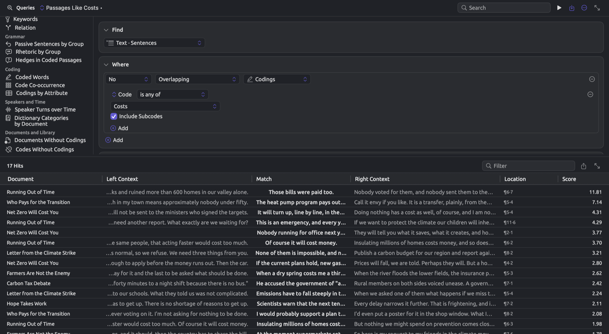
In the Score column, the score of each sentence is shown. Sentences are sorted in descending order of their scores. Since the score depends upon the size of both the inside and the outside, comparison between lists is not possible. By default, the list contains up to 200 sentences. For larger amounts of sentences, increase the number beside Limit in the Show condition; over 5,000, also increase Limit in the Options condition.
Normally, one processes sentences starting at the top of the list, batch by batch, like so:
- Double-click a row, or choose Go to Source from its shortcut menu, to open the sentence in its document.
- Read it in context, and if it belongs with the code, code it (see Chapter 7, Coding).
- When you have worked through a batch, go back to the query and press ⌘R. The sentences you have coded drop out of the list.
The Filter field in the bar above the results allows you to filter the rows shown based on whether their text, context, or document contains the inputted text. By typing part of a document’s title into the Filter field, you may narrow down the results to a single document at a time. The Open results in a window button, with two diagonal arrows at the right of the same bar, will allow you to keep the list in view alongside your documents. The results window keeps the list as it was when you opened it; if you wanted the updated list after pressing ⌘R, you’d need to open the window again.
⌘R reuses your query’s original profile. If you wanted to incorporate your latest coding decisions into your profile, you could choose Passages Like a Code and the code again. Profile preservation requires you to save your query (refer to Saving queries in Chapter 15, Building a Query).
Score shows up in the menu showing Document Order only when dealing with queries whose list is frozen (see Frozen lists in Chapter 15, Building a Query). A frozen list can come from queries created via Passages Like a Code or the Freeze Values command. The scoring process remains the same either way. When using Freeze Values, each word’s weight is the score it was frozen with. With a keyword list, the weights represent log-likelihoods; with a collocate list, they represent association scores.
To apply sorting by Score, there must be at least two different words from the list per passage; and since a word holds only one, sorting by Score requires setting Find to a unit of several words, such as Text · Sentences or Text · Paragraphs, prior to sorting. For example, sort by Score the “Keywords: Activists” query from Freeze Values in Chapter 18, Using Query Results, with Find set to Text · Sentences within the “Skeptics” set. The skeptics’ sentences containing the activists’ keywords most densely appear at the very top.
The lens or analyzer creation process and Auto Code… require setting the menu showing Score to another option (see Which queries can be lenses in Chapter 18, Using Query Results).
Recipes
A recipe is a pre-fabricated query for a common question you may wish to ask. Examples of queries served up as recipes might be a concordance, a word list, or the co-occurrences of codes. They can also give you a place to begin while learning to craft queries, or quickly provide an overview of your material prior to developing your own queries. Do not hesitate to alter conditions from a recipe into something more suited to your needs, saving the altered query under a new name.
The Recipes list gives access to the available query recipes for sets or projects, displayed below saved queries in the left column of the Queries section and the Queries window. The Search field in the bar at the top finds a recipe or a saved query by its name. You can also find the recipes for a document’s query in the inspector via the Recipes menu (the wand icon) in the bar at the top. Both locations display the recipe options categorized as Words, Grammar, Coding, Speakers and Time, and Documents and Library and show only the relevant recipes based on context. In sets and projects, there exists an additional recipe option titled Passages Like a Code at the end of the left column (see Passages Like a Code earlier in this chapter).
Selecting a recipe replaces your active query with a new, unsaved query named after the recipe and runs it. If your old query had unsaved changes, use ⌘Z to restore it.
In the table’s center column, what comes before the semicolon is set in Find and Where, and what comes after it in Show.
| Recipe | The query it sets up | Offered in |
|---|---|---|
| Concordance | Words whose Lemma is a value you type; List | everywhere |
| Word List | Words where Is Word is true; Count by Lemma, limited to 200 rows | everywhere |
| Collocates | Words whose Lemma is a value you type; Collocates | everywhere |
| Keywords | Words; Keywords | a set; a project that has at least one set |
| Relation | Pattern Matches with a Dependency pattern, A a verb and B its Object; Count by Word · B · Lemma | everywhere |
| Passive Sentences by Group | Sentences where Passive is true; Compare by Group, measured Per 10,000 Words | sets, projects, and All Projects |
| Rhetoric by Group | Findings of the Rhetoric analyzer; Count by Group and Finding | sets, projects, and All Projects |
| Hedges in Coded Passages | Findings whose Finding is any of Hedge, Some Inside Codings; List | everywhere |
| Coded Words | Words where Is Word is true and Stopword is false, Some Inside Codings; Count by Lemma, limited to 100 rows | everywhere |
| Code Co-occurrence | Codings; Network by Code, linked when they are Overlapping | everywhere |
| Codings by Attribute | Codings; Count by Code and Group | sets, projects, and All Projects |
| Speaker Turns over Time | Speaker Turns; Over Time by Media Time and Speaker | wherever the documents include audio or video |
| Dictionary Categories by Document | Text Matches of a dictionary; Count by Document and Category | sets, projects, and All Projects, when there is a dictionary |
| Documents Without Codings | Documents, with Has No Codings in Where; List | sets, projects, and All Projects |
| Codes Without Codings | Codes, with Has No Codings in Where, counting only codings in the documents searched; List | everywhere |
| Document Table | Documents; List with the columns Authors, Date, Language, Group, Tags, and Tokens | sets, projects, and All Projects |
“Everywhere” means a document’s query, a set’s or project’s Queries section, and Window ▸ Queries regardless of scope. The groups the recipes count by are document groups, such as “Print” and “Online” in “Climate Debate”.
Certain recipes require an input value or a choice before their results mean much:
- Concordance and Collocates both come with a blank Lemma rule. Type the lemma of interest into this rule slot; until you do, the rule is ignored and the query covers every word.
- Keywords needs something to compare with. In a set, the recipe compares the set with the rest of the project. In a project’s Queries section it compares the project with the first of its sets; choose another in the menu showing its name in the Show condition. The scores are explained in Keywords in Chapter 16, Query Results and Statistics.
- Relation counts the objects of all verbs; adding a rule to A, e.g., Lemma is
pay, will yield the count of objects of this specific verb. Similarly, choosing another relation for B will change what Relation counts. - Codings by Attribute starts grouping by document Group by default; in order to group by attribute values, you should select Attribute ▸ Stance or any other attribute via the field menu of the second Group By row.
- Dictionary Categories by Document uses one of the dictionaries included in the current project. Should there be several dictionaries included, you may wish to verify which one the Find condition names, and change it if needed.
- Hedges in Coded Passages uses the list of hedges detected by the Metadiscourse analyzer. If instead you are looking to count the categories of a dictionary of your own, e.g., “Hedges”, inside codings, then begin with Dictionary Categories by Document, followed by adding the context Some Inside Codings in Where (see Chapter 19, Dictionaries).